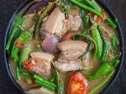

Pork Sinigang

Pork Sinigang with Gabi Mix
Pork Sinigang!?! Filipinos love this meal, the more sour, the better and enjoyable the session is. Every Carenderia has cooked this blessing from the gods above.
The strong flavor of sour, able to make your taste buds go crazy, enough to make you sweat ensuing that pleasurable surprise.
And with that, Filipinos can't wait to taste the delicacy moment by moment every time it's on the plate.
- 5 cups --- Water
- 0.5 kg --- Pork Spare Ribs
- 1 pc --- Onion
- 2 pcs --- Tomato
- 1 pc --- Finger Chili
- 0.5 cup --- Okra
- 0.5 cup --- Sitaw
- 0.5 cup --- Radish
- 1 cup --- Kangkong
- 1 sachet --- Magic Sinigang Sampaloc with Gabi Mix
- Simmer pork in water with onion and tomatoes for 45 minutes.
- Add finger chili, radish, okra and sitaw with 2-minute intervals.
- Pour Magic Sinigang Sampaloc with Gabi Mix. Stir in kangkong. Transfer into a serving bowl and serve immediately.